This section provides an overview of the dimensioning of tools.
Tool types
The figures below show the tool dimensions.
"L1" stands for the length X, and "L2" for the length Z.

Milling cutter (type 120)
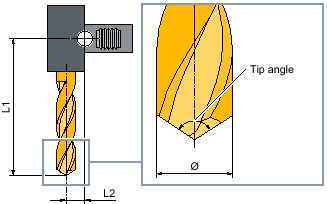Drill (type 200)
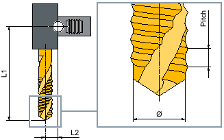Tap (type 240)
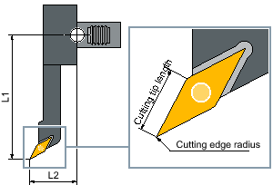Finishing tool (type 510)
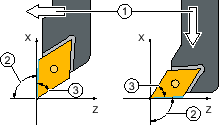① | Reference direction |
② | Holder angle (= 93°) |
③ | Cutting tip angle (= 55°) |
Angle descriptions finishing tool (type 510)
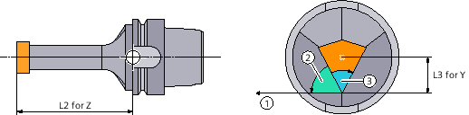① | Reference direction |
② | Holder angle (= 62.5°) |
③ | Cutting tip angle (= 55°) |
Y finishing tool (type 515)
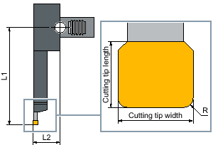Plunge cutter (type 520)
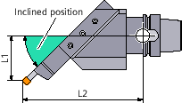Inclined plunge cutter (types 521 and 531)
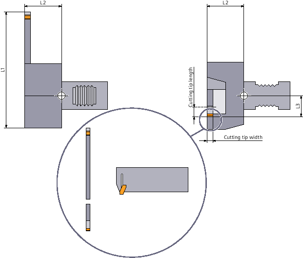Y plunge cutter (type 525)

Threading tool (type 540)
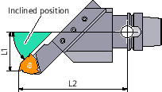Inclined threading tool (type 541)
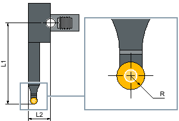Button tool (type 550)
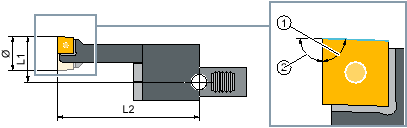① | Cutting tip angle (= 88°) |
② | Holder angle (= 90°) |
Rotary drill (type 560)
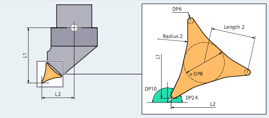Prime A (type 570)
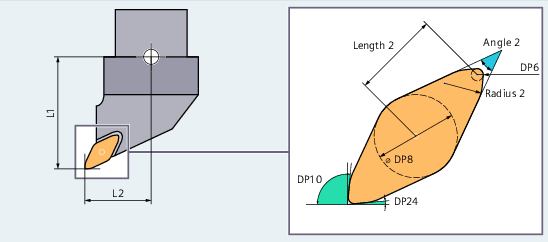Prime B (type 571)
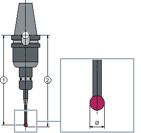① | Length m |
② | Length u |
3D probe (type 580)
| Note |
A 3D probe must be calibrated before being used for the first time. |
Stop (type 730)
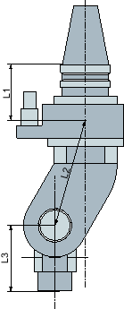Angle head adapter
L1, L2, L3 are offset geometry lengths.
| | Machine manufacturer The tool length is measured to the center of the ball or to the ball circumference. Please refer to the machine manufacturer's specifications. |